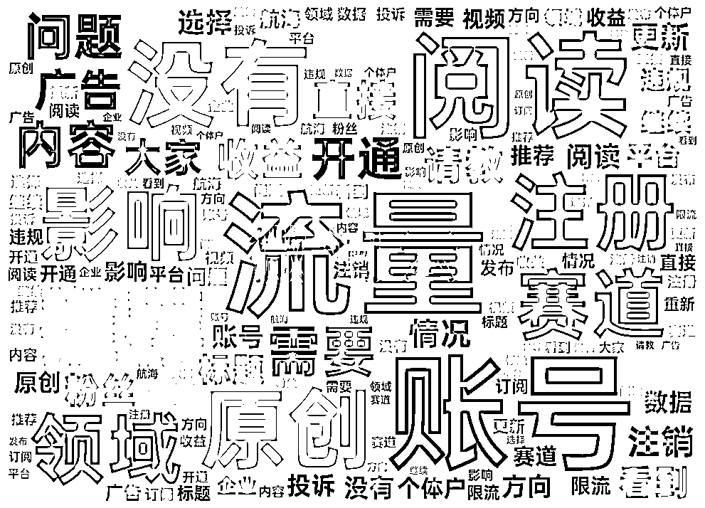
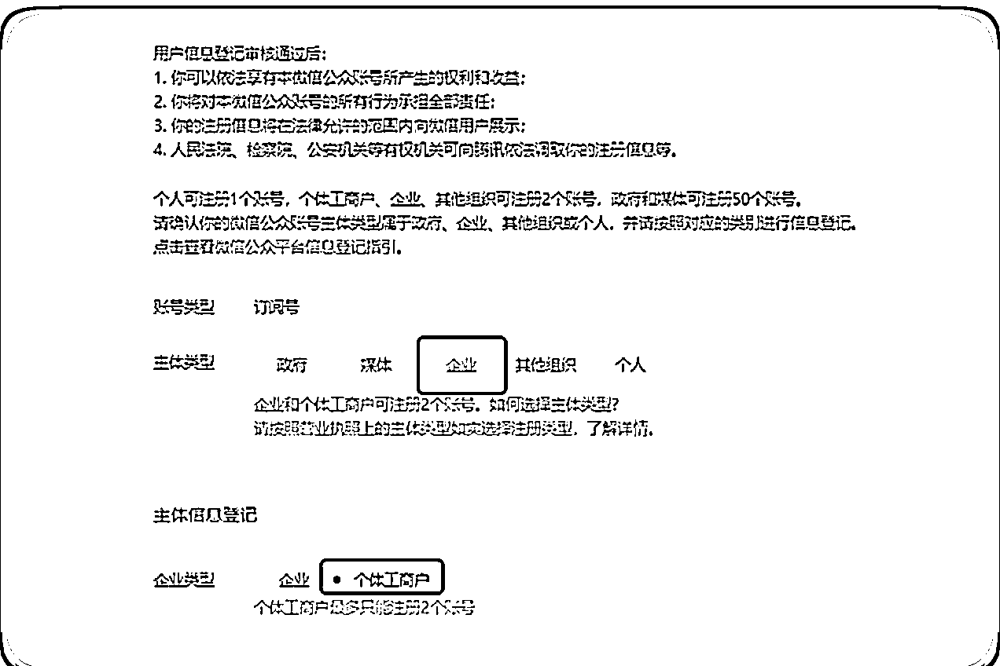
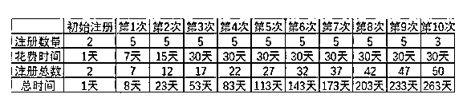
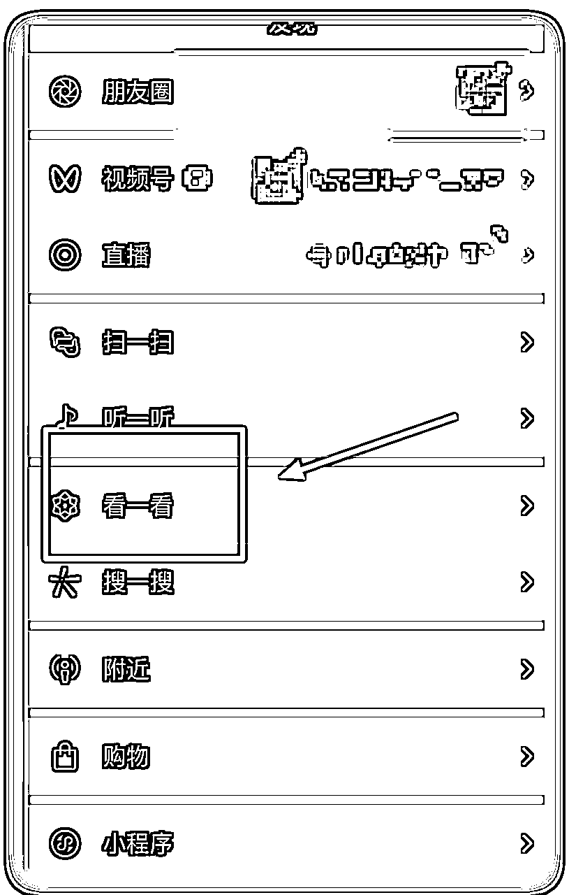

来源：https://y3my0b87ql.feishu.cn/docx/WQEYdrt7foNBN4xhVMJcR7bnnDb
12月航海已经过去快 2 周了，你还在继续前行么？
在12月份有幸，成为「公众号爆文写作」的教练，和大家一起成长和学习。我在这趟航海中收获颇丰，现在，我也想借此机会，和大家分享一下我的航海总结，希望能对大家在航海结束后，还能继续航行，继续搞钱有所帮助。
航海绝不是一帆风顺的，在航海的过程中，看到大家的提问来看，遇到各种各样的困难和挑战。
最大的问题就是：写的文章，没有流量。
但，好多船员通过不断地精进和进化，坚持不懈，永不放弃，获得了正反馈，找到自己的赛道和写作方法。
在航海中，教练们通过精选日志、高手分享和多个环节来促进大家继续前行，一起赚到钱。
航海结束后，如果没有一群人每天报喜、分享和解答问题，如果这个时候还没有钱，就很难有激情，继续前行。
希望我的这次航海总结，对大家有所帮助。预祝大家在航海后，继续深耕、取得进步、取得成功，一起生财有术！
来自官方数据，参与「众号爆文写作」航海的船员有1774位，上船的 1540 位。
截止到2024-2-5，我从 5 个航海群，收集了数据总共的数据是 46967 条，
从这个数据里面找到有用的信息，提供大家在航海之后，这段时间内，可以继续航行，有问题的可以直接点击这里可以看到之前的回答。
原始数据：
也提供了大家的自我介绍，从大家的自我介绍里面，看到一些有用的资源，一起搞点事也不是不可能。
还有一个渠道就是，回头再看其他船员的日志，好事、精选日志，点击链接生财有术·航海资料库。
从聊天记录里面 #举手 标签找到的所有问题。举手提问总共 1129 条。

排名最高的几个词云里面，可以看出来大家遇到的问题：流量、账号，阅读、没有，注册，影响，推荐，领域，赛道。
从这些关键字里面，可以大致分为拆分为3个大问题，也是最常见的，也是容易遇到的问题。
好了， 大部分问题找到了，下面就要开始找到问题的答案。
二八原则， Top20%的问题，解决80%的问题。
下面挑选几个有代表性的问题，由于回答都比较分散，我整理之后，加上自己的个人见解，抛砖引玉。
我们所说的公众号，是订阅号，千万不要注册小程序或者是服务号。
A. 一个身份证可注册一个公众号，一个手机号码可验证五个公众号。
这里要注意个人注册，目前一个普通账号只能注册一个订阅号，如果是之前注册的会提示你的，可以直接解冻或者是找回，可以继续用，说不定还有留言功能，现在一个留言功能的账号都好几千呢。
B. 用注册
可以参考这个官方的教程，用个体户注册公众号。

还有就是，企业如果是有一个体账号，去注册公众号的话，可以最多注册50个。下面是兔子鱼教练发的一个注册图片，大家可以参考一下。

千万要注意，这里注册好之后一般是没有粉丝的，这个粉丝，不要一上来就坐直升飞机，急着先去买。
因为有几位船友，就急着去买了粉丝，账号被封了，不能开流量主。
建议先发几天文章，然后再去买这个。
去哪里买？淘宝搜或者其他地方都可以，关键字「订阅号」，自己注意甄别真假。
还有一点，不要担心前几天，发的文章火了之后没有钱赚，因为后面开通了之后，前面的文章也是有底部广告。
没有标准答案。
我的个人建议是：短平快的项目，方案就是模仿。
模仿的基础上加一个思路：思路就是：提出假设-> 尝试-> 继续假设-> 直到成功。
这个是通病，不是你一个人遇到的，是（大部分）所有项目，（大部分）所有商业都会遇到这个问题。
如果我能掌握这个固定的套路，那我就发了。没有流量，这是大多数项目和商业都会遇到的常见问题。不要灰心，这并不意味着这个的项目或商业不成功。
相反，我个人的思路就是：提出假设-> 尝试-> 继续假设-> 直到成功。
具体做法就是：
首先要给大家泼个冷水。
我给你说：名人名言，影视，极简生活领域，职场，军事，历史。 这些是热门赛道，这些领域超级火爆，你信么？
说实话吧， 我都不信。。
没有那个领域是长期的赚钱的，并不是每个赛道都能永久赚钱。
赚钱的赛道是不断变化的，需要我们学会如何找到它们。
找到赚钱赛道的方法不是听别人说，也不是一时半会儿看热门赛道。而是要自己去尝试，去探索。
只有亲身经历过，你才能真正了解一个赛道是不是适合自己，才能知道它是否适合你，是否能让你赚钱。
所以，不要害怕尝试，不要害怕失败。只有不断地尝试，你才能找到属于自己的赚钱赛道。
当然，在尝试的过程中，也要注意总结经验教训，不断地学习和进步。这样，你才能在未来的竞争中立于不败之地。
那如何找到这个赛道，这个领域？
我推荐我经常看的一个地方。

看一看、关注的对标账号、收藏的历史文章
有一个小技巧，就是看到不错的文章，可以转发给自己和收藏，后面有空了，来多看看。或者是模仿的对象。
赚钱记住，三不成立：事少，钱多，风险小，没有 3 个同时成立的，有的话。
Q：选的赛道是武汉地区的旅游类，想法是把武汉这个地区围起来写，只写武汉这个地区的，会不会面临受众比较小，从而导致流量起不来？
A：将武汉地区的旅游类账号文章，每次发布几篇。在头条+次头条+xxx。这样就可以在短时间内发表多篇高质量文章。
Q：ai只有用于生图可以吗。我现在只有两个号，是做两个方向好呢，还是一个大方向聚焦两个下面的子方向好呢？
A：首先是图片，可以用 AI 生成的，只要还可以避免版权的问题。
关于是否应该做两个方向还是一个大方向聚焦两个下面的子方向，我的建议是：
如果你有足够的时间和精力，可以考虑做两个方向。这样可以分散风险，也更容易吸引到不同的受众。
如果你时间和精力有限，可以考虑聚焦一个大方向下的两个子方向。这样可以让你在某个领域内有更深的研究和理解，也更容易创作出高质量的内容。
我个人倾向于前者。
Q：我今天看手册说，遇到爆款文章，要拆解出来开头，过程，结尾，然后按照自己的话，再模仿一篇。我的疑问:这个意思是我们直接把爆款文章选题拿来用，甚至标题改一下也可以拿来用？内容也是模仿对方的，是这个意思吗？那么，这样文章的原创度会不会不高，如果不高的话，会不会影响入池？
A：只要标注原创能过，说明原创度就没有问题，除非有人举报。
我一般有时候，看到标题特别好的， 我标题都懒得改，直接用对方的。内容还是要用 AI 来再次二次创作。
Q：不开原创会有影响吗，不开原创会推流吗？我看我一个对标账号，每一篇都不标原创，多篇10W+，再差都是几万。是老号，有留言功能，而且留言区非常火爆。但是是去年9月才开始写现在的内容，看账号改名的更新记录，之前肯定不是写这个赛道的，不知道是以前没写文章，还是说把以前的删了的。
A：不开原创对账号的推荐和权重都会有影响。推流方面：
还有就是别人的每篇都是 10w+，那很大可能是：说明对方耕耘很久了，粉丝基础很大。没有参考价值。
Q：有个有留言功能的老号，11月开始做的，出池一个多月了，之前都是军事、国际关系领域的，有过一万多收益、半洗稿（具体选题有调），出池后换过领域发了几篇，后来又转回来，还是没有起色，这种号要注销吗，老留言号舍不得注销，不注销的话，改手搓继续这个领域吗，还是说直接换领域了？
A：不要注销。直接注册一个新的账号，也不是不可以的。
Q：我有一个靠模仿起来的号，中间被举报三次，申诉成功两次，失败一次，现在账号流量很稳定，算是入池了，现在是自己找素材比较好还是继续模仿写作?模仿的基本都是爆款文章，好多人都写，也有一定的阅读量，自己写 标题啥的都不太好掌握 模仿写作是长久之计吗？
A：对于短平快的项目，就是模仿是最快的， 有了一定流量和粉丝的基础情况下，可以考虑自己找素材，自己写。
如果你想长期发展你的账号，建议你逐渐从模仿写作转向自己找素材，自己写。你可以先从模仿中学习写作技巧和方法，然后逐步融入自己的想法和创意，最终形成自己的写作风格。
如果你有问题， 还没有到原始的数据里面去找找看。问题不是关键，下场实操起来，才是最大的难度。
在自媒体时代，想要创作出高质量的内容，离不开素材的积累和灵感的迸发。
真的是素材和赛道，领域，这些都是自己平时刷的时候，多注意下。积累起来的。
下面大家分享一些实用的资源，包括 AI 提速提示词、图片素材和公众号细分领域。希望这些资源能够帮助大家创作出更多精彩的内容，吸引更多的粉丝。
用AI来加速写作文章。
根据民生类文章提示词，改写， 其实把民生改为其他xxx都行。 -- 似乎来自伟豪教练
"请根据以下指示撰写一篇文章：
-我是一名公众号xx文章的写作者需要仿写文章
-你是一位擅长伪原创写作的专家，具备将原有文章内容进行创新性改写的能力，
-文章内容包含，
标题内容包含，有异常，有捷径，有性暗示，有暴力，有民生问题，有民族主义，有情绪，有金钱，有数字，包含九个要素中的一个或者多个，要让人有强烈读下去的欲望，要达到（开幕雷击）的效果。
要求：
任务流程：
-请按引言（要求 50 字），背景（要求 100 字），主体部分（要求 400 字），讨论（要求 200 字），结论（要求 200 字）顺序根据以下步管执行任务，每完成一项任务请与我确认是否满意，我回复满意后你再执行下一步，必要时请求我提供相关信息
请根据以上指示仿写文章，确保内容逻辑清晰、信息准确、风格一致。"
【图片哪里找？】（仅供生财圈友参考使用） --- 似乎来自兔子鱼教练
一，【APP类】
小红书这个APP挺好的，有很多分享美图的，优点是：好看、审美好；缺点是：有的不给用
判断方法：你去博主首页看看，简介上是否有明确写：严禁二改、二创、严禁商用盗图
写了就不能用人家的，避免侵权
没有写，可以下载图片，裁一下右下角自带的小红书字样就OK。
这个APP里面也有很多图，很多小红书博主的背景图会在里面找
好处是免费、无版权的多
缺点是：广告多，不小心会点掉。不过都不是事儿，开个会员，好像一个月2块钱，便宜的。
二，【网页类】
网址：http://pixabay.com/
网址：http://www.pexels.com/
网址：www.unsplash.com
网址：www.gratisography.com
网址：https://visualhunt.com/
网址：http://cupcake.nilssonlee.se/
网址：https://www.photock.jp/
网址：http://kaboompics.com/
网址：https://stocksnap.io/
网址：http://fancycrave.com/
电脑发文章的时候，选择领域，不知道选哪一个，可以参考这个，非常的全面。
注意手机的订阅号助手，没有这个选项。
期望这些问题和素材，能为一些继续在这个航海深耕的圈友，一些帮助~
最后， 祝大家在新年快乐， 一起生财有术。